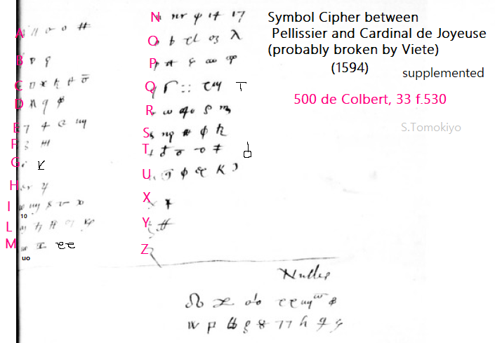
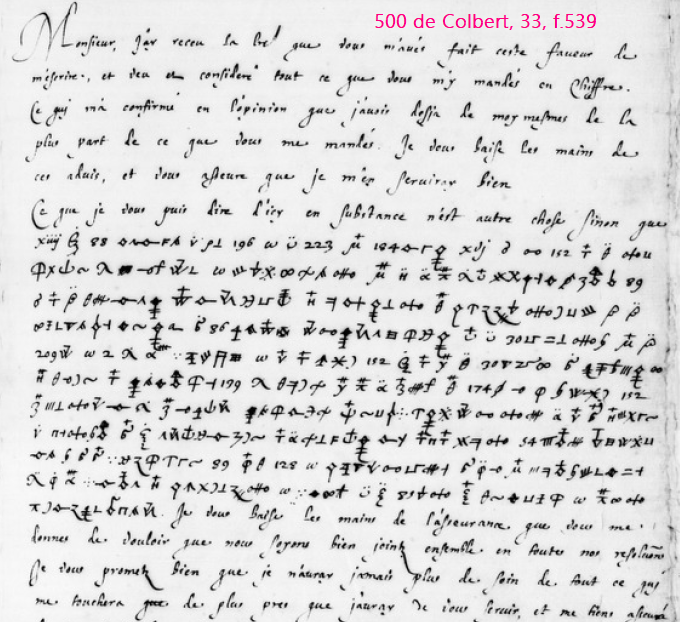
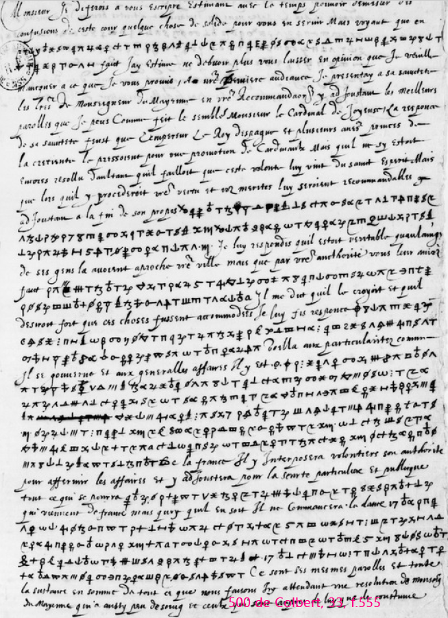
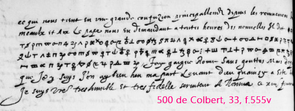
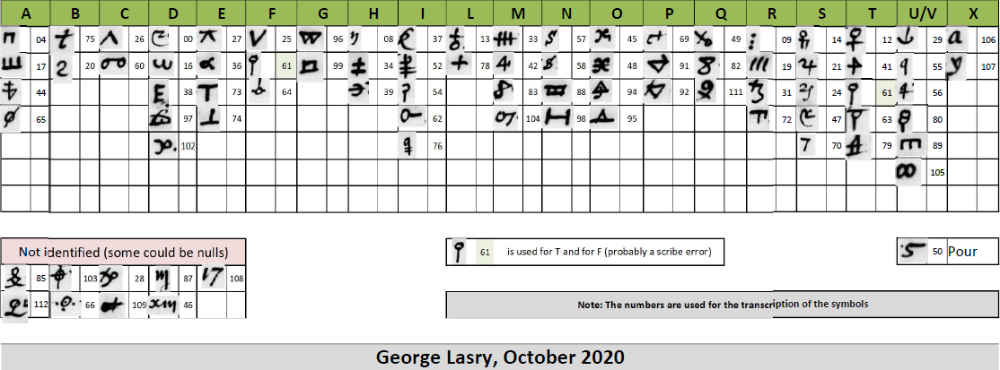

François Viète (1540-1603) (Wikipedia in French, Wikipedia), now generally remembered as a mathematician, was a statesman and lawyer, and also served as a skilful codebreaker. The present article focuses on François Viète as a codebreaker. After an overview of well-known facts, papers deciphered by Viète in Cinq Cents de Colbert 33 are catalogued and some specific ciphers solved by Viète are identified.
Table of Contents:
François Viète's Deciphering Activities
Viète's Deciphering Activities
Viète's Method of Cryptanalysis (Viète's "Infallible Rule" of Cryptanalysis)
Contemporary Codebreaker, Chorrin
Basic Resources of François Viète as a Codebreaker
Q1. When Viète Started Deciphering?
Q2. For Whom Viète Deciphered in 1588?
Q3. Until When Viète Continued Codebreaking for Henry IV?
Q4. What Specific Ciphers Were Broken by Viète?
Q5. Why Are There Only a Few Code Symbols?
Q6. Is the Pamphlet of 1590 in Cinq Cents de Colbert 33 a Final Version?
Ciphertexts Left Undeciphered by Viète
In his youth, Viète served a Huguenot family and mixed with prominent Huguenots including young Henry of Navarre, later Henry IV. When Viète was relieved from offices because of animosities of the Catholic League, Henry of Navarre tried to intercede with King Henry III on his behalf, though without avail.
After Henry III took an irrevocable step of assassinating the domineering leader of the League, Duke of Guise, in December 1588 and transferred the court to Tours (Baird, vol.2, p.142), Viète was among the first to join the King. (According to Maillard and Poirier (2006), Henri III mécène (Google), p.216, Viète was in Tours at least as early as 27 April 1589.)
When Henry III was assassinated by a fanatic monk in August 1589, the new king Henry IV, who knew his merits, made him a privy councillor and a councillor of the Parlement at Tours.
Viète deciphered many letters dating at least from 1588 to 1594.
Among them, the most famous is the letter from Commander Moreo to Philip II of Spain, dated 28 October 1589. Viète solved it and, after sending his preliminary achievements in extracts, reported the full decipherment to the King. Viète went so far as to publish the decipherment with his report to the King in 1590, presumably with the King's approval (he was wealthy enough to print his works at his own expense (1911 Encyclopaedia Britannica)) in a pamphlet entitled "Deschifrement d'une lettre escrite par le Commandeur Moreo au Roy d'Espaigne son maistre du 8. Octobre 1589" from the printer Jamet Mettayer (Wikipedia), who had followed the court to Tours.
Commander Moreo was sent by Philip II as a liaison to the Duke of Mayenne. Mayenne led the League after the death of the Duke of Guise, his brother, but was beginning to be concerned with the Spanish influence and was alienated by the Leaguers in Paris (Jensen p.183-184).
Viète explained his motivation in publishing his decipherment was to reveal the design of the Duke of Mayenne, which he considered would be to "the desolation and dissipation" of France. In the letter to the King, Viète said he would carefully preserve the original letter with the "alphabets and dictionaries" used to decipher, and would be ready to provide them should need arise for verification. Viète was fully aware that once it was known that the Spanish cipher was broken, the cipher might be replaced, but he was sure he would be able to solve them, as he had done.
Later, in a memoir presented in 1603 to Sully, Henry IV's right-hand man, Viète disclosed that he also used his unpublished solutions to alert Mayenne himself of the treacherous intentions of Spain and even his own followers (Pesic, p.5, 23).
Despatches sent to Viète in Tours to be deciphered multiplied. More than ten bundles, some even without being opened, were delivered to him. Viète enlisted Charles du Lys (Wikipedia) for transcription and finding frequency/appearance of symbols. (Wikipedia in French, citing Ritter) Another secretary, Jacques Alleaume, helped Viète in his deciphering and, when he died in 1627, left several works of Viète (Pesic p.15).
From 1594, Viète was exclusively charged with cryptanalysis. In two letters to Henry IV, he called himself interpreter and decipherer for the king (Wikipedia in French, citing Vie de Thomas [Egerton], lord chancelier d'Angleterre, p. 329-330, which I cannot find).
In one occasion, Viète rather indiscreetly boasted of his cryptographic achievements to Giovanni Mocenigo, Venetian ambassador. According to his testimony (5 June 1595) upon returning from France, when he talked with Viète in Tours, Viète told him he had read many letters in cipher of the Spanish king, the Emperor, and others. This was not only a slip of the tongue, for Viète showed a thick packet of his solutions and he even declared that he knew a Venetian cipher. On 12 June, the Venetians replaced their ciphers. (Kahn p.117-118, Bazeries, p.233-235, Armand Baschet, Les archives de Venise (Google), p.578-579) Viete could have no motivation in this disclosure as in the case of breaking Commander Moreo's cipher in 1590. His indiscretion can be justified only if one assumes that the disclosure took place after Viète ceased his work in deciphering and that the activity of cabinet noir was not taken for granted at the time.
Pesic (1997) found specific methods of Viète's deciphering are recorded in Viète's own memoire written shortly before his death.
Viète begins with general techniques. First, comparison of different copies of a letter sent by an ambassador would reveal equivalent symbols. Second, "essential numbers" (i.e., Arabic figures, often marked in ciphertext, that are not used as a code/cipher symbol, but represent the number itself) would allow guessing the words around them. For example, "12 m 38 13" with essential numbers indicated by underlines would reveal "ou" for "m 38". As another example, 4000 and nearby 500 would be followed by "infantry" and "horse", respectively. For 100,000, the following word is more likely to be "ducats" rather than men. The third observation is to take advantage of stereotypical expressions such as "Copia de" in the title of a document. Itemized documents often begin with "memorial y instruction." The fourth is frequency analysis, in which Viète advises "Don't spare either labor or paper."
The above techniques would have been employed by others, but Viète goes on to disclose his "infallible rule" for codebreaking. Although Viète's description is terse, Pesic (1997) elaborates on his technique. Viète's method does not exploit careless enciphering or specific words/expressions, but works on triads (trigrams) extracted from the ciphertext. It relies on the fact that succession of three consonants seldom occurs in French, Spanish, and Italian, in other words, that a triad would most probably include at least one vowel. So, if one finds five mutually exclusive triads from the ciphertext, each of them would contain a different vowel. (Finding such triads involves simply extracting three-symbol sequences from the beginning of the ciphertext, skipping any symbol that already occurred.)
According to the explanation in Pesic (1997), mutually exclusive dyads (digrams) are similarly extracted. Although dyads may not always contain a vowel, if the most frequent symbol is conjectured to be E, the symbol paired with it would be a consonant. These findings are applied to the triads and the values of other symbols are syllogistically determined.
Although the above rule is for simple (monoalphabetic) ciphers, it can be extended to homophonic substitution ciphers, in which each letter can be represented by more than one symbol (i.e., 10 triads instead of 5, or, counting Y as a vowel, 12 instead of 6).
Viète's infallible rule reduces cryptanalysis to a methodical process that does not require a flash of inspiration. It was a creation of the mind of the mathematician Viète.
While Viète does not discuss polyalphabetic ciphers, his contemporary by the name of Chorrin solved one in 1590. Pope Sixtus V died on 27 August 1590. A courier from Rome bearing a message of the death was brought to the camp of Henry IV, who was besieging Paris held by the Catholic League. It was in polyalphabetic cipher, but Chorrin succeeded in breaking it (Agrippa d'Auvigné, Histoire universelle, tome viii (Google) edited by André Thierry (1981), p.180; a copy from 1626). Kahn considers the cipher is the one printed in Meister (1906), p.426, given to Panicarola, who belonged to the staff of Cardinal Caetano, the papal legate in France, who was with the Leaguers in Paris.
For the famous English codebreaker Thomas Phelippes, see another article. For the Dutch codebreaker St-Aldegonde, see another article.
• Cinq Cents de Colbert 33 (500 de Colbert 33) (Gallica) contain many letters considered to have been deciphered by Viète (references to him (or his initials F.V.) are on f.200v, f.260, f.608v). It is called "Dechiffres de Correspondance Espagnole, par M. Viette" in The Life of Thomas Egerton, p.135. (see also Wikipedia in French, citing Ritter in n.7)
• "Deschifrement d'une lettre escrite par le Commandeur Moreo au Roy d'Espaigne son maistre du 8. Octobre 1589" (1590) This pamphlet includes Viète's report to Henry IV and the decipherment of Commander Moreo's letter to Philip II. It is found in f.198 of Cinq Cents de Colbert 33. Manuscript decipherment is found in f.243. It is reprinted in Bazeries (1901), Les chiffres secrets dévoilés, p.217-232, with a translation of the decipherment in French.
• Viète's Memoire of 1603. The memoire is described and translated in Peter Pesic (1997), "François Viète, Father of Modern Cryptanalysis - Two New Manuscripts", Cryptologia, 21:1. (Pesic (1997) provides further sources (p.4-6 etc.).)
The following (which I have not seen) are also important.
• Frédéric Ritter (1895), "François Viète", Inventeur de l'Algèbre Moderne, 1540-1603. Essai sur sa Vie et son OEuvre", Revue Occidentale, 10, p.234-274, 354-415 (cited by Pesic (1997))
• Frédéric Ritter, "Étude sur la vie du mathématicien François Viète (1540-1603), son temps et son oeuvre" (unpublished) a dactyolographic copy is in Papier Viète, 106 AP [microfilmed as 87 Mi] as Ms.2009 of Bibliothèque de l'Institut de France in Archives Nationales (pdf catalogue). Ms.2009 includes the 1603 memoire as well as many letters deciphered by Viète (Pesic n.17, 12).
The dates of the documents in Cinq Cents de Colbert 33 (I have not seen the documents included in Ritter) range in the following periods:
June-July, December 1588
January, March-May, August-December 1589
January, March-April 1590 (*By the way, Chorrin's deciphering of polyapahbetic cipher (above) would have taken place in August or September 1590.)
October-November 1593
January-April, June, August-September 1594.
One cannot definitely say how long it takes since an epistle was written until it was sent (it was common to wait for a convenient courier (e.g., Jensen, Chapter VI)), how long a packet was en route before being intercepted and sent to Viète, and how long it took to solve the cipher.
According to struckout text on f.260 of Cinq Cents de Colbert 33, despatches of September to October 1589 were sent to Viète for deciphering ("pour etre interpretees") in December. The decipherment of the famous letter of Moreo of 28 October 1589 was reported to Henry IV in March 1590. From these, it seems probable that deciphering was done in a few months from the date of the despatch. If so, Viète started deciphering in late 1588.
It seems accepted that Viète's deciphering was done for Henry III during his reign (Wikipedia, MacTutor History).
I have no objection to this interpretation, but it is remembered that Viète, a Huguenot lawyer, was dismissed from offices by Henry III and the intercession by Henry of Navarre in 1585 came to nothing. Wikipedia points out it is not clear when Viète resumed his office under Henry III, citing Maillard and Poirier (2006), according to which the earliest date on which Viète can be confirmed to have been in Tours where the court resided was 27 April 1589, which was after the reconciliation of the King with Henry of Navarre on 3 April (Baird vol.2, p.142). According to Wikipedia, citing Ritter, Viete had returned to Fontenay, reconquered by the troops of Henry of Navarre (Baird, vol.1, p.420), in 1587. He devoted this period of retirement to works on mathematics.
Viète's deciphering found in Cinq Cents de Colbert 33 is up to September 1594. Whether his deciphering activity continued after this affects the assessment of gravity of Viète's disclosure of his achievement to the Venetian ambassador (recorded in June 1595).
Pesic (1997) points out that references to latest ciphers of Spain and Italy in Viète's memoire of 1603 may indicate that he continued his deciphering work until 1603 (p.9, 22-23). However, since Viète spoke of "recent troubles" in referring to events back in 1589-1594, one must take care to assess the scope of the word "latest". Hence, it is desired to identify those "latest ciphers".
Regarding the Spanish ciphers, I have already pointed out its similarity to Cp.57 of Devos (1950) (see another article). Although there are differences, they may be accounted for by transcription errors. Devos (1950) dates this at 1600-1601 (probably based on an entry in the nomenclature for Aldobrandino, who was sent to France in this period). (However, a cipher of a similar format was used as early as 1594, for which see f.440 of Cinq Cents de Colbert 33 below.)
Regarding Aldobrandino and the patriarch of Alexandria, their letters from 1594 are in f.522 of Cinq Cents of Colbert 33.
Anyway, the very fact that Viète felt the need to write a memoire so as not to let his techniques die with him seems to indicate that he was still engaged in the work in 1603.
Among the documents in Cinq Cents de Colbert 33, the few code symbols with their reading allowed me to identify the following ciphers (see another article for each of these ciphers):
• Cp.38 (also recognized by Devos (1950), Kahn (1967), and probably others) (Pesic (1997), n.7, gives Cp.38 and Cp.32 as ciphers assigned to Moreo and Mendoza, respectively, but does not say they are the ones deciphered by Viète. I have not found evidence that Cp.32 was broken by Viète.) ... used by Philip II, Alessandro Farnese (Duke of Parma), Don Juan de Idiaquez, Bernardino de Mendoza, Moreo, December 1588-January 1589, September 1589. (The cipher used is not completely the same as Cp.38. It employs marks to change the ending from -o to -a or to add -s, as in Cg.13. See, e.g., "cuenta" from "cuento" and "cartas" from "carta" on f.5.) (Kahn, p.117, associates symbols of Cp.38 with Commander Moreo's letter of 28 October 1589. Although there is no direct evidence, Moreo's use of Cp.38 in other letters seems to justify it.)
• Cg.13 ... used by Philip II, Farnese, Olivares, Monanda, Juan Idiaquez, Martin de Idiaquez, Mendoza, Armis, Carlos Arragon, Guillen de San Clemente, Andrea Doria, St Luc, June 1588-May 1589
• Syllabic Numerical Cipher (1592) ... used in copies of Tassis' letters to Philip II, October-November 1593
• Syllabic Numerical Cipher (1593) ... used by Condeste[?], March 1594
• symbol cipher given in f.530 ... used by Pelissier, Cardinal de Joyeuse, February 1594
• There are other ciphers yet to be identified. One has a format similar to Cp.57.
Most of the papers of Cinq Cents de Colbert 33 contain only sporadic code symbols without substitution cipher. Cp.38 of Devos (1950) found in the Archivo general de Simancas lacks a substitution alphabet, while Cg.13 is complete with both the substitution alphabet and a nomenclature. Probably, the copies in this volume with sporadic code symbols are the result of deciphering the substitution cipher. (Although many have signatures attached, one can see that those signatures are not autographs.) A fragmentary ciphertext in such a substitution cipher remains in f.468v (and one word in f.481).
Sometimes, undeciphered code symbols are kept in the partially deciphered text and (later) their reading is written between the lines (e.g., f.4). In other cases, undeciphered symbols are written in the margin and blanks are left where their reading is filled later (e.g., f.482).
The printed pamphlet divulging the decipherment of Commander Moreo's letter preserved in Cinq Cents de Colbert 33, f.198, has many handwritten corrections (in Viete's hand (Pesic (1997), n.8)). The final version is the one in which those corrections are effected, as seen in the handwritten copy in f.243. The text printed in Bazeries is also the corrected version. The handwriting is for "reneu et corrige sur l'original depuis la premiere edition", as shown in the front page.
The front page of the pamphlet prints only the year 1590 without date. The handwritten date of 15 March 1590 of the letter to the king is deleted, but the date seems to be accepted (Kahn p.117, Bazeries p.222, Bauer (2006), Decrypted Secrets (Google) p.70).
Cinq Cents de Colbert 33 (Gallica) came from the historian de Thou and is described in Catalogus bibliothecae Thuanae, ii, p.480, according to a catalogue in print (Gallica).
The following lists materials contained therein. (I made it for my considerations in the above. There may be multiple transcription errors.)
(f.1) Table of Content (Its use is limited by its indicating the number of pages, but not the page number.)
(f.4) Alessandro Farnese, Duke of Parma, to Don Juan de Idiaquez, 30 December 1588 (Devos (1950), p.59, notes he had seen a decipherment of a letter addressed to Farnese dated 30 December 1588 among 36 folios in 500 de Colbert.)
(f.8) Farnese to Philip II, 4 January 1589
(f.13v) Farnese to Philip II, 21 January 1589
(f.18v) Farnese to Philip II, 13 January 1589
(f.26) "François Laloo", secretary of state [in the Low Countries], to Baltazar Catano, Amberes [Antwerp], 25 March 1589
(f.26v) François Laloo to Baltazar Catano, Antwerp, 20 April [1589]
(f.27v) François Laloo to Baltazar Catano, Antwerp, 25 April 1589
(f.29v) François Laloo to Baltazar Catano, Antwerp, 25 April 1589
(f.34) François Laloo to Baltazar Catano, Antwerp, 1 April 1589
(f.35v) François Laloo to Baltazar Catano, Antwerp, 25 April 1589
(f.37) François Laloo to Baltazar Catano, Antwerp, 20 April 1589
(f.38v) François Laloo to Baltazar Catano, Antwerp, 25 March 1589
(f.41) "Asle Papel se ha de decifrar sigiuendo el ultimo (capit[ul]o) de la (nim) en (R1) que va en claro con las (cartas) tet" [?]
(f.42v) "Memorial que dio Monsieur de Mauleon"
(f.45v) Copy of a letter to "Rey de Francia & de Polonia" [Henry III]
(f.46v) "Memoriale que se dio a los cauos que presento Mos de Lusemburg de la parte del duc daumala y los de (Jul [Mecina])"
(f.50) Copy of Three Letters from Mendoza to Farnese, 15, 17, 19 April 1589
(f.53) "Memorial presentado par M. de Richebourg embiado del (Duc) de Aumala Basompierre y Manevile"
(f.54v) "Copia de (carta) qu'escrive al (duc) de parma Monsieur de Rona de Vitry que es una villa (se) en Champagna sobre el (ma) marne" [?]
(f.56) Farnese to Philip II, 30 December 1588
(f.62) Farnese to Philip II, 30 December 1588
(f.63v) Farnese to Philip II, 30 December 1588
(f.66v) Farnese to Philip II, 13 January 1589
(f.68) Farnese to Juan Idiaquez, 21 January 1589
(f.69) Mendoza to Philip II, 1 April 1589
(f.71) Mendoza to Philip II, 1 April 1589
(f.74v) Mendoza to Martin de Idiaquez, 2 April 1589
(f.75v) Mendoza to Martin de Idiaquez, 2 April 1589
(f.76) Mendoza to Philip II, 11 April 1589
(f.81) Mendoza to Philip II, 11 April 1589
(f.82v) Mendoza to Philip II, 22 April 1589
(f.84) Mendoza to Philip II, 21 April 1589
(f.87) Mendoza to Philip II, 25 April 1589
(f.93) Mendoza to Martin de Idiaquez, 21 April 1589
(f.94) Mendoza to Philip II, 21 April 1589
(f.96) Mendoza to Martin de Idiaquez, 28 April 1589
(f.96v) Mendoza to Philip II, 30 April 1589
(f.98v) Mendoza to Philip II, 30 April 1589
(f.101) Mendoza to Philip II, 8 May 1589
(f.103) Mendoza to Philip II, 18 May 1589
(f.105) Enrique de Guzman, Conde de Olivares [Count of Olivares] (Wikipedia), Spanish ambassador to Rome, to Mendoza, 9 May 1589
(f.106) Olivares to Farnese, 13 May 1589
(f.107v) Olivares to Mendoza, 13 May 1589
(f.111v) Armis to Mendoza, 18 May 1589
(f.113) "Avisos que a havenido adar David Traducidos de (fer [Portugues])"
(f.122) "Copia de la Carta que escrivio el Duque Deumena [Mayenne] a Su Sandidad Con el Dean frison"
(f.123v) "Puntos que lleua Cargo de significar a S.S. Dean frison a qui embia el duque Deumena y ...."
(f.125v) "Avisos de Sanson de Tours", 6 April 1589
(f.128) Olivares (in Rome) to Philip II, 10 June 1588
(f.128v) Olivares to Philip II, 15 June 1588
(f.129) Olivares to Philip II, 15 June 1588
(f.130) Olivares to Philip II, 17 June 1588
(f.131) Olivares to Philip II, 26 June 1588
(f.133) Olivares to Philip II, 27 June 1588
(f.134) Olivares to Juan de Idiaquez, 1 July 1588
(f.136) Olivares to Philip II, 8 July 1588
(f.136v) Olivares to Philip II, 8 July 1588
(f.137) Olivares to Juan de Idiaquez, 11 July 1588
(f.141) "Lo que el Olivares dize a Su Sandidad de parte de Su M^d Catholica el xix de Junnio 1588"
(f.144) Armis a Don Cristoval de Moro y Don Juan de Idiaquez, Turin, 10 July 1588
(f.148) Armis to Philip II, 8 July 1588
(f.149v) Armis to Philip II, 6 July 1588
(f.153) Armis to Philip II, 11[?] July 1588
(f.153v) Armis to Philip II, 11 July 1588
(f.154v) Armis to Philip II, 11 July 1588
(f.156) Armis to Philip II
(f.158v) Carlos Arragon [Carlo d'Aragona, Duca di Terra nova (WorldCat)] to Philip II, Milan, 2 July 1588
(f.159v) Carlos Arragon to Philip II, 15 July 1588
(f.161) Don Guillaume de St. Clemente [Guillen de San Clemente] (Wikipedia) to Philip II, Prague, 17 June 1588
(f.161v) Don Guillaume de St. Clemente to Philip II, 28 June 1588
(f.162v) Don Guillaume de St. Clemente to Philip II, 28 June 1588
(f.163v) Conde de Monanda to Philip II, Naples, 5[?] July 1588
(f.164) Juan Andrea Doria to Philip II, Puçol, 6 July 1588
(f.167) Juan Andrea Doria to Philip II, 6 July 1588
(f.167v) Mendoza to Philip II, 25 May 1589
(f.169) Mendoza to Martin de Idiaquez, 22 May 1589
(f.172) To de St Luc, 22 April 1590 [signed with cipher symbols?]
(f.175) François Laloo to Jacob ... [see f.1v], Antwerp, 4 August 1589
(f.177) François Laloo to ..., Antwerp, 7 August 1589 [the one cipher symbol "xum"? does not fit Cg.13]
(f.178) François Laloo [marginal note: "C'est l'Ambassadeur dEspagne qui fait signer ainsi et fait le superscription a Baltazar Catano et herederos de Yuan Bautista Litte"] to Philip II, Paris, 21 August 1589
(f.180) Mendoza to Martin de Idiaquez, Paris, 21 August 1589
(f.180v) To Gabriel de Cayas del Conseijo de Su Maiestad, 8 March 1590
(f.183) Philip II to Mendoza, San Lorenzo, 7 September 1589 (Cp.38)
(f.187) Philip II to Mendoza, 20 September 1589 (Cp.38)
(f.191) Philip II to Juan de Moreo, 20 September 1589 (Cp.38)
(f.195) "Lo que S.M. mande se admirtun Don Bernardino de Mandoca y el Comendador Moreo paraque procedan en esta manera"
(f.198) Viète's Pamphlet (1590): "Dechiffrement d'une lettre escrite par le commandeur Moreo au roy d'Espaigne son maistre du 8. October 1589" ... printed pamphlet (handwritten copy is in f.243 below)
(f.210) "A Baltazar Catano y herederos de Juan Bautista Litta en Medina del Campo" [marginal note: "Ceste addresse est feuite et la lettre est au Roy dEspaigne escrite par Mandozze"], Antwerp, 25 September 1589
(f.213v) From Franclois Laloo [marginal note: "Laloo est Mandozze"; printed in The Life of Thomas Egerton (Google), p.135, according to which Laloo is Mendoza's assumed name; see also f.210 and f.304]
(f.214) Copia del Billette para Mos de Mauleon, Paris, 10 October
(f.214v) Escrito en que Don Bernardino de Mendoca responde a algunos puntos del papel que su M.C. manda embjar al Comendador Moreo y al dicho don Bernardino de Mandoca con el pliego del vii de Setiembre 1589
(f.225) "Copia de puntos dados por escrito al Duque de Parma en Binz XVI de Ottubre" (Cp.38)
(f.232) Moreo to Philip II, 27 September 1589
(f.234) Moreo to Philip II, 27 September 1589
(f.240) Articles envoyez par le Commandadeur Moreo au Roi d'Espaigne, 18 October 1589
(f.243) Moreo to Philip II, 28 October 1589 (the one printed in the pamphlet of 1590 above)
(f.248) "Los cargos echos al Car^l Moresino", Rome, 24 January 1590
(f.250) To "Monsieur de Laloo secretaire d'Estat en la personne du Roi", 11 January 1590
(f.250) To "Monsieur Daman chancelier de sa majeste et president de Brabant", 2[?] January 1590
(f.250) Rugier Margliano to Don Giovanni Idiaquez, 30 December 1589
(f.252) Johan de Alboa to Philip II, Palermo, 10 January 1590
(f.254) Rugier Margliano to Don Giovanni Idiaquez, 19 January 1590
(f.256) "Antonio Caligaro ...", 27 January 1590
(f.256) "A Auguslm de Bruxelles 25 Janvier" [?]
(f.260) "Recueil sommaire des contenus en plusieurs lettres escrites en chiffre par les ennemis du Roy", September and October 1589; Struckout text reads "envoyees a F.V. [i.e., Viète] pour estre interpretees en decembre".
(f.264) To Philip II, "Cruzada de Portugal", Rome, 26 August
(f.266) Olivares to Fran^o de Idiaquez, 28 August 1589
(f.268) Olivares to Mendoza, 21 August 1589
(f.269) Olivares to Philip II, 27 August
(f.278) Olivares to Don Juan de Idiaquez, 27 August 1589
(f.280) Mendoza to Philip II in the hand of Don Martin de Idiaquez, 27 August 1589
(f.282) "Copia de lo que el conde de olivares escrito a Don Juseph de Acuna a xiii de Agosto" (Cg.13)
(f.284) Olivares to Philip II, 13 August 1589
(f.288) Copia de dos Capitalos que El Conde de Olivares escuuo a francesco de Vera a XIX de Agosto 1589
(f.290) Olivares to Philip II, 21 August 1589 (Cg.13)
(f.294) (Cg.13)
(f.296) (Cg.13)
(f.298) Mendoza to Philip II, 22 August 1589
(f.300) Mendoza to Don Martin de Idiaquez, 27 August 1589
(f.302) Mendoza to Philip II, 21 August 1589
(f.303v) "Billet d'une lettre a yclinques"
(f.304) Mendoza to Philip II, 27 August 1589 "La lettre est au Roy d'hespaigne escrite par son ambassadeur Mandozze de Paris / Toutefois elle saddresse au seigneur Jehan Baptista Litta [see f.210 above] et dattée et soubscripte François Laloo."
(f.307) "A pontamentos que da David de que passou en Inglaterra etc os xxi de Jullio ..." (?cipher unknown (pre=G1, turque=X1, ...)
(f.311) "Copia de Carta de Don Antonio para Antonio de Escobar su agente sm dattar" (Cg.13)
(f.314) Mendoza to Philip II, 28 September 1589 (unidentified cipher: "criados"[???] for his, ...)
(f.316) Mendoza to Philip II, 28 September 1589
(f.318) Mendoza to Philip II (Cg.13)
(f.320) Mendoza to Philip II, 11 October 1589
(f.322) Mendoza to Philip II, 11 October 1589
(f.324) Mendoza to Philip II, 13 October 1589
(f.326) Mendoza to ?, 13 October 1589
(f.327) Mendoza to Philip II, 22 October 1589
(f.328) V. Prego Maldinado[?] to Mendoza, ? October 1589
(f.329) Mendoza to Don Martin de Idiaquez, 18 August 1589
(f.330) Mendoza to ?, 10 October 1589
(f.332) Olivares to Mendoza, Rome, 23 September 1583[?]
(f.334) (Cg.13)
(f.339) Mendoza to Philip II, 28[?] August 1589
(f.340) Carlos Arragon to Mendoza, 21 September 1589
(f.343) Francesco de Vera to Mendoza
(f.345) Francesco de Vera to Mendoza, 18 September 1589
(f.349) To Philip II, Rome, 22 August 1589
(f.350) Copy of Pope Sixtus V to Philip II, 21 August
(f.351v) To Philip II
(f.352) To François de Idiaquez, Rome, 14 August 1589
(f.356) To Mendoza
(f.358) Jehan de Alua [Alvarez] to Mendoza, Palermo, 21 January 1589 ("frances" for sum, which matches Cg.13, is struck out and replaced with "negocios"; "venetia" for con? does not match Cg.13, either)
(f.360) Farnese to "Al molto magnifico mio amatissimo Il Cauallero Biondo In Corte", Brussels, 22 January 1589
(f.361) "Il Signor Don Pedro Mendosa ..." (?unidentified cipher: "piazza cieta"? for go, ? for gom, "presideo" for lom, "questemotre"/"quegle"? for nam, "quale" for nom, "naue"? for zam; "principe a" for ciy?; "imperatore"/"imperador" for 36e, "gran" for 38e, "duque" for 47e, "principe" for 48e, "o"? for 59e, "o"? for 74e, "nilan"? for 76e)
(f.366) "Il Signor Don Carlo d Aragona Duca de Terra noua Gouernador del stato di Milano ..." (only address?)
(f.366v) Mendoza to ?, 17 August 1589
(f.368) Don Guillen de San Clemente (Wikipedia) to Phillip II, Prague, 26 December 1589 (unidentified cipher: "sicilia" for luun; the sender uses Cg.13 in the same period (see f.386v), in which "Sicilia" is "xor")
(f.368) Don Guillen de San Clemente to Phillip II, Prague, 12 December 1589
(f.370) Granvelle Perrenot to Augustin Villanueva, "secretario de su Magestad en Madru"
(f.371) Melchior de Nassera[?] to Hieronimo Tregum, Milan, 27 January 1590
(f.371) Melchior de Nacera[?] to Baltazar, his brother,
(f.371) To Hieronimo Tregum
(f.371v) Diego de Olea To Diego de Ibarra, Milan, 27 January
(f.372) "Cantio a Senatoribus et Aulieu Serenissimi Regis Polones"[?] in Latin, 5 October 1589
(f.374) Jehan[?] de Alua to Mendoza, Palermo, 2 June 1589
(f.374v) Jehan[?] de Alua to Mendoza, Palermo, 19 May 1589
(f.376) To Duc de Mercoeur, Camp de pontorse[?], 16 March 1590
(f.378) "Deschiffrement dune lettre escrite a Monsieur de Mercoeur par son agent pres Monsieur du Mayne", 21 March 1590
(f.382) Gio: Steffano Torran to "Molto ill^mo S^r mio", 10 November 1589 (?unidentified cipher: symbols like Θ and $)
(f.384) "Legete respondete a ella ruenta ...", "All Ill^mo Amb^r Veneto presso la Cardica ..."
(f.385) Issehan[?] de Alua to Mendoza, Palermo, 23 June 1589
(f.385v) Guillaume de St. Clemente [Guillen de San Clemente] to Philip II, Prague, 12 December 1589
(f.386) Guillaume de St. Clemente to Philip II, Prague, 12 December 1589
(f.386v) Guillaume de St. Clemente to Philip II, Prague, 12 December 1589 (Cg.13: "Napoles" for "quun"; for the symbol "mun", the reading "estado" (which is actually for "num") is struckout and is replaced with "mercyn"?)
(f.387v) Guillaume de St. Clemente to Philip II, Prague, 12 December 1589
(f.389v) "Copia" Guillaume de St. Clemente to Conde de Miranda, 5 December 1589
(f.392v) Guillaume de St. Clement to Philip II, Prague, 12 December 1589
(f.394) "Sommaire du contenu en divers pacquets surpris sur ceux de la Ligue en Avril 1594"
(f.402) Jan Battiste de Tassis to Philip II, 26 October 1593
(f.405) Tassis to Philip II, 5 November 1593
(f.406) Tassis to Philip II, 16 November 1593
(f.410) "Advis du Duc de Feria sur la proposition qui fut faicte en Lassemblee du xxv Aoust 1594 lequel ..."
(f.414) (?unidentified cipher: the reading ("Francia"?) for "10 with an umlaut" on f.415v is deleted)
(f.418) 31 March 1594
(f.419) "Propuesta de Mos. de Albigni al Condestable", 22 March 1594
(f.421)
(f.424) [?] Condeste, Milan, 31 March 1594 (?Cp.38: "sul" appears to correspond to "occasion" in the margin, though "occasion" corresponds to the next entry "tal" to "sul" in Cp.38; another undeciphered symbol "15 with an umlaut" is not in Cp.38 printed in Devos (1950))
(f.426) Condeste, Milan, 31 March 1594
(f.428) (Syllabic Numerical Cipher (1593) (Nevers Collection no.67/no.59, f.124): "cosas" for 29^r, "mucho" for lol, "muchas" for lol+r, "nuestra" for rel+, "para" for xol, "V.M." for pis, "parti" for zel; "cartas" for 59r with umlaut)
(f.432)
(f.434) Alfonso Lasaro[?] to "Su Altezza Serenissima", 27 February [1594?]
(f.438) Alfonso Laaseo[?] to "Ser^mo Seg^re", 27 February 1594
(f.440) Gio Batta Agocchi to Cardinal de Piacenza, Rome, 5 February 1594 (unidentified cipher: "Nemurs" for P13, "qual" for 56?, como? for S34, R22 for glona?, G31? for casa, S44 for ?, S55 for ?, ..., "po" for S13, "ques" for S25, "to" for S7, "giorno" for R11?, "ins"? for S33, "mo" for S52?, "egli" for S18, "non" for S41, ...; the symbol format "letter+figure" is the same as Cp.57, for which see another article)
(f.446) "Illustrissimo et Reverendissimo mio Signor et Patron Colendissime" (unidentified cipher: undeciphered symbol "bus"?)
(f.452) Madrid, 11[?] February, "Il Ambasciador del Imperator" (unidentified cipher: "imbasciador" for '02 (' is an overdot), "imperadore" for 06, "tutto" for 89, "quel(lo)" for 29, "del" for ^i, "havana" for 54, "queszu"? for 19, ...)
(f.458) (unidentified cipher: "Mons^r Nuntio" for 75' (' is an overdot), "Grecia" for '41, "Greci" for '52, "S.M." for '12, "Turco" for '46; "quale" for 29 with underbar, "quelo" for 09; "he" for 12; "ol"? for ^4; undeciphered '58, 54, ...)
(f.460)
(f.462) Madrid, 26 February (the same unidentified cipher as f.458: "principe" for '02, "señor" for 72', "negocio" for 7θ, "S.M." for '12, "Greci" for '41, "quanto" for 09+, ...)
(f.464) 16 February, "Il ambasciador del Imperator" (the same unidentified cipher as f.452 and f.462: "imbasciador" for '02, "negocio" for 7θ)
(f.465) [?] Condeste, Milan, 31 March 1594 (Syllabic Numerical Cipher (1593))
(f.467) (Copy) Tassis, Paris, 16 November 1593 (Syllabic Numerical Cipher (1592) (Nevers Collection no.54 (f.97)): "D'Vmena" for pol, "estado" for vul, "cosas" for Jal^r, "legato" for vom, "Roma" for vos, "Infanta" for rom, "resolution" for sis, "otra" for uurρ "primero" for pirρ; "S.S." for 49 with an umlaut; "reyno" for tis, "no" for zor, "otro" for vur [uur], "para" for xor, ...; with "T" below, 61 is "tiempo", 68 is "tregua")
(f.468v) (fragmentary ciphertext in Syllabic Numerical Cipher (1592) with interlined decipherment)
(f.475) (Copy) Tassis to Philip II, Paris, 26 October 1593 (Syllabic Numerical Cipher (1592) ("...8 73^r 83 acquesto" on f.481) "aquelles" for gi, "aquella" for giρ, "favores" for fat^r, "effeto" for ral, "duque" (Umena) for pol(f.476v), "assi" for ho, "bien" for li, "mesmo" for hor, , "aunque" for jal, "dicha" for mel, "paraque" for xur, "fin" for dam, "cargo" for nis, "adelante" for ca, "agorre"? for cu, "porque" for for, "partes" for zerρ "come" for se, "cardinales" for lal, "poder" for dos, "exercitio" for sos, "primeros" for pirρ, "relligion" for rur; with T below, "yo" for 56, "siempre" for 34)
(f.485) (Copy) Tassis to Philip II, Paris, 5 November 1593 (unidentified cipher with undeciphered symbols of patterns CV, CVs, CVl, CVr (c: consonant, v:vowel), of which CVr does not occur in Syllabic Numerical Cipher (1593); tes for "reyno" is close to Syllabic Numerical Cipher (1592))
(f.487) Don Diego de Ibarra to Doria, Brussels, 7 September 1594 (unidentified cipher; although a cipher between Don Diego de Ibarra and Andrea Doria (1592) is known (see another article), identification is not yet possible.)
(f.491) Conde de Fuentes to Duke of Sessa (unidentified cipher: uor for "rason" does not match Syllabic Numerical Cipher (1592) or Syllabic Numerical Cipher (1593); use of "T below figure" is similar to the former)
(f.493) "Pariseir del Duque de feria sobre lo que se propuso en la Junta de 25 de Agost 1594 y lo des enelo 27 del mismo" (unidentified cipher: hurρ apparently corresponding to "opiniones", which would not collate well with the alphabetical ordering of Syllabic Numerical Cipher (1592))
(f.497) Duke of Feria to Philip II, Brussels, 31 August 1594 (unidentified cipher)
(f.498) Duke of Feria to Philip II, Brussels, 31 August 1594
(f.501) Duke of Feria to Philip II, 20 June 1594
(f.511) "lAmbasciator dell' imperator ..." (unidentified cipher same as f.452?)
(f.514v) (unidentified cipher: the nomenclature uses three-digit figures (198 papa, 301 non, 181 imperadore, 098 christianita, 372 Iuno? and 092, 277 undeciphered) as well as dotted two-digit figures ('81 assenso?))
(f.519) "Di Roma", 17 June 1594 (marginal annotation: "chiffre enuoye de Roma par le Card Aldobrandin au Card Plaisance estant a Montargis")
(f.522) "Du Patriarche d'Alexandrie au Card. de Plaisance" [Piacenza], Madrid, 15 April 1594 (unidentified cipher: 94 for genti/S.S., 17 for che)
(f.525) l'Abbe d'Orleans to Duke of Guise, Rome, 22 January 1594
(f.527) (Original) Marquis de Montpezat (Henri des Prez) to l'Abbe d'Urvans, 13 February 1594
(f.528) (Original) M. Pelissier to Cardinal de Joyeuse, 13 February 1594 (in symbol cipher of f.530, with a few words interlinearlly deciphered; many nulls are used in this ciphertext, even within a word; the cipher is different from one known cipher of Pelissier reconstructed in another article)
(f.530) Partially reconstructed symbol cipher alphabet (used in despatches of f.528 and f.575)
(f.531) (Original) Montpezat to Duchess of Mayenne, 13 February 1594
(f.533) (Original) Montpezat to Duke of Mayenne, 13 February 1594
(f.535) (Original) Mercier to M. de Joyeuse, 15 February 1594
(f.537) (Original) Commander de Diou to M. Bernard Avecal[?] au Parlement de Dijon, 26 February[?] 1594
(f.539) (Original) Cardinal de Joyeuse to Villars, admiral de France, Rome, 15 February 1594 (in unidentified symbol cipher, undeciphered) (The cipher seems different from the alphabet of f.530.)
(f.541)
(f.543) 14 February 1594
(f.544) (Original) Cardinal de Joyeuse to Monopezat
(f.546) Montpezat to Cardinal de Joyeuse, Madrid, 13 February 1594
(f.548) Claude de Bauffrement, baron de Senecey [Sennecey], ambassador of the League in Rome (Wikipedia), to Bernart[?], 14 February
(f.549) (Original) Montpezat to Monsieur de Roscieux[?], secretaire d'etat
(f.551) (Original) Cardinal de Joyeuse to Archbishop of Lyon
(f.553) (Original) Cardinal de Joyeuse to Duc de Joyeuse
(f.555) (Original) Senecey to Archbishop of Lyon (in unidentified symbol cipher, deciphered by George Lasry (see below))
(f.557) I.D.P. to Bernard, 15 February 1594
(f.558) Montpezat to M. du Maine
(f.560) (Original) Pellissier to Abbe d'Orleans, 16 February 1594
(f.561) (Original) Pellissier to Senecey, "gouverneur de la ville et chasteau dAuxonne", 16[?] February 1594
(f.562) (Original) Alfonso Vaaz, ambassador of Duke of Savoy in Spain, to Duke of Savoy, 27 February 1594
(f.566) Bebeancheu[???], Toulouse, 2 March 1594
(f.568) (Original) Duke of Mayenne to Monsieur de Casaulx, "premier consul de la ville de Marseilles", March 1594
(f.569) Farphillys[???] to Consuls of Marseilles, 7[?] March 1594
(f.571) (Original) Duke of Mayenne to "Consuls de la ville de Marseilles", 7 March 1594
(f.573) (Original) Duke of Mayenne to Duke of Savoye, 8 March 1594
(f.575) (Original) Senecey to President Jeannin, 15 March 1594 (in symbol cipher of f.530, undeciphered) *The beginning of the cipher reads something like "es[t]oict quil plusta sa sainctete entreprandre la pacification generalle de toute ... portant par son autorita la france les ... la religion catholicqua ceulx quil...."
(f.577) (Original) Senecey to Duc du Maine, 15 March 1594
(f.579) Proposition de M. d'Albigny ..., March 1594
(f.581) "Copie d'une lettre tres importante ecrite sur par M. du Maine a M. de Senecey etant a Rome peu apres la reduction de la ville de Paris"
(f.583) Condeste to Philip II, 30 March 1594 (unidentified cipher: some symbols on f.584)
(f.587) Condeste to Philip II, 31 March 1594
(f.591) Condestable [Connêtable] to Don Joseppe de Acuna, Milan, 30 March 1594
(f.591) Condestable [Connêtable] to Don Joseppe de Acuna, Milan, 26 March 1594
(f.592) Condestable [Connêtable] to Don Joseppe de Acuna, Milan, 30 March 1594
(f.593) Condestable [Connêtable] to Don Joseppe de Acuna, Turin, 28 March 1594
(f.594) Don Joseppe de Acuna to Condestable, 25 March 1594
(f.595) To Philip II, 31 March 1594
(f.597) Tassis to Duke of Sessa, 27 November 1593
(f.598) Tassis to Duke of Sessa, 9 November 1593
(f.599) Don Joseppe de Acuna to Condestable, Turin, 28 March 1594
(f.601) To "Sua Altezza Serenissima de Savoya", Madrid, 12[?] February 1594
(f.605) Alfonso Larzlo[?] to" Sua Altezza Serenissima", 30 January 1594
(f.608v) Endorsement: "Dechiffrement de plusieur lettres interceptes escrives au Roy dEspagne par de Savoye et aultres sur la Negotiation du Sr dAlbigny a Autan[?] que des saisses qui estoient en garnison a Lyon en lan 1594 / les originaulx de ces lettres sont demeures entre les mains de Monsr Viette M[aitr]e des Req[ue]tes auquel il les ay baillees pour deschifrer / Mars 1594 / xix^e Liasse"
While Cinq Cents Colbert 33 mainly contains deciphered copies, there are some original letters, of which some appear to remain undeciphered (unbroken). The cipher seems different from the similar symbol cipher of f.530, which solves the ciphertext of f.528 (Pelissier to Cardinal de Joyeuse, 13 February 1594) and f.575 (Senecey to President Jannin, 15 March 1594).


One cipher used by Joyeuse with his agent is in another article, but does not seem to solve this.


In 2020, George Lasry solved this with his computer algorithms (received on 31 October). Breaking a homophonic cipher with as many as 79 symbols with this relatively short ciphertext is a great achievement.

His solution is now printed in his article in the proceedings of HistoCrypt 2022 . After submitting it, he found a book, Nicolas, Claude et Georges de Bauffremont, barons de Sennecey (Google; see p.203), which allowed him to date the letter around February 1594. He kindly provided me with the key in a better format together with decryptions.